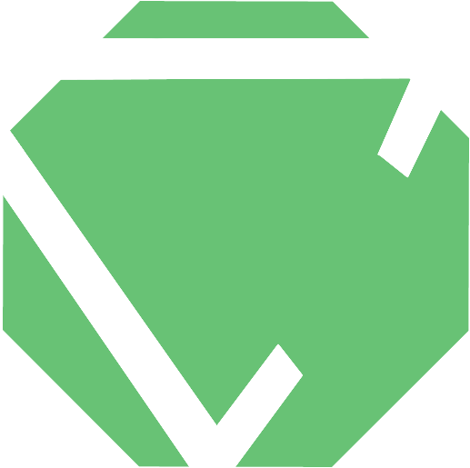

<br><br><br>

<!--<div class="navbar navbar-default navbar-bottom">
<div class="container">
<p class="navbar-text pull-left">Built by Tim and Pat.                                                     
</p>                                                                                                       
</div>                                                                                                     
</div> -->

<style>
#footer ul {
    text-align: center;
    margin: 0 auto;
    
}
#footer li {
    display: inline;
    list-style-type: none;
    padding-right: 20px;
    text-align: center;
}

</style>
<div id="footer">
<hr style="color: white; width: 75%;">
<br>
<ul>
<li><a href="#">Made for the Koding Hackathon</a></li>
<li><a></a></li>
<li><a href="https://github.com/t-s/codeagon">More About this Site</a></li>
</ul>
</div>
<br><br><br>
